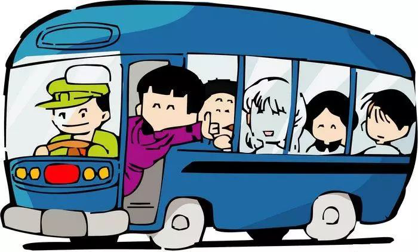
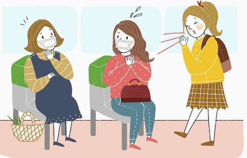

2月2日晚
广东疾控公布的病例情况中
一名26岁珠海男子的经历惹人关注
⬇️⬇️⬇️
与患者同乘大巴2小时被感染
据广州日报报道，珠海一名26岁的年轻男子，于上周被确诊为新型冠状病毒感染的肺炎病例。疾控中心流行病学专家开展调查，顺藤摸瓜，竟然发现他在发病一周前与病例孙某同乘一辆大巴车，从广州南站到珠海，车程2小时。

（网络配图）
那是不是跟确诊患者同坐一辆车，就会成为密切接触者啊？
不能这样说，不同的交通工具对密切接触者的定义是不一样的！
飞机
一般情况下，民用航空器舱内病例座位的同排和前后各三排座位的全部旅客以及在上述区域内提供客舱服务的乘务人员作为密切接触者。其他同航班乘客作为一般接触者。
铁路旅客列车
①乘坐全封闭空调列车，病例所在硬座、硬卧车厢或软卧同包厢的全部乘客和乘务人员作为密切接触者。
②乘坐非全封闭的普通列车，病例同间软卧包厢内，或同节硬座（硬卧）车厢内同格及前后邻格的旅客，以及为该区域服务的乘务人员作为密切接触者。
汽车
①乘坐全密封空调客车时，与病例同乘一辆汽车的所有人员作为密切接触者。
②乘坐通风的普通客车时，与病例同车前后3排座位的乘客和驾乘人员作为密切接触者。
轮船
与病例同一舱室内的全部人员和为该舱室提供服务的乘务人员作为密切接触者。
如与病例接触期间，病人有高热、打喷嚏、咳嗽、呕吐等剧烈症状，不论时间长短，均应作为密切接触者。

（网络配图）
为了大家的出行安全
⬇️⬇️⬇️
国家卫健委提醒：出行做好健康防护
1
乘坐火车、飞机：
尽可能隔位而坐、分散而坐。现在返程还没有迎来高峰，还有条件分散而坐。
2
乘坐长途汽车：
也建议隔位而坐、分散而坐，同时建议长途汽车要每2个小时去休息区休息一次。这样做不仅仅是休息，主要是开窗通风。
3
出门在外如何洗手？
最好用含醇的消毒剂把手的6个部位擦试到，如果对酒精过敏，可以用无醇的手消毒剂。如果没有手消毒剂，只有消毒湿巾，那用消毒湿巾擦一擦也是可以的。